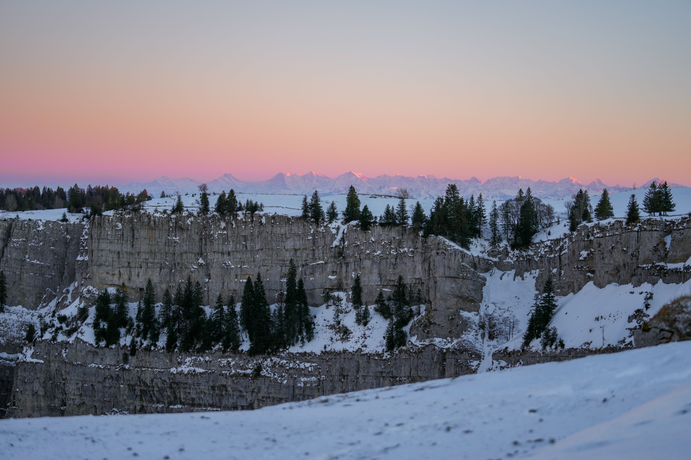
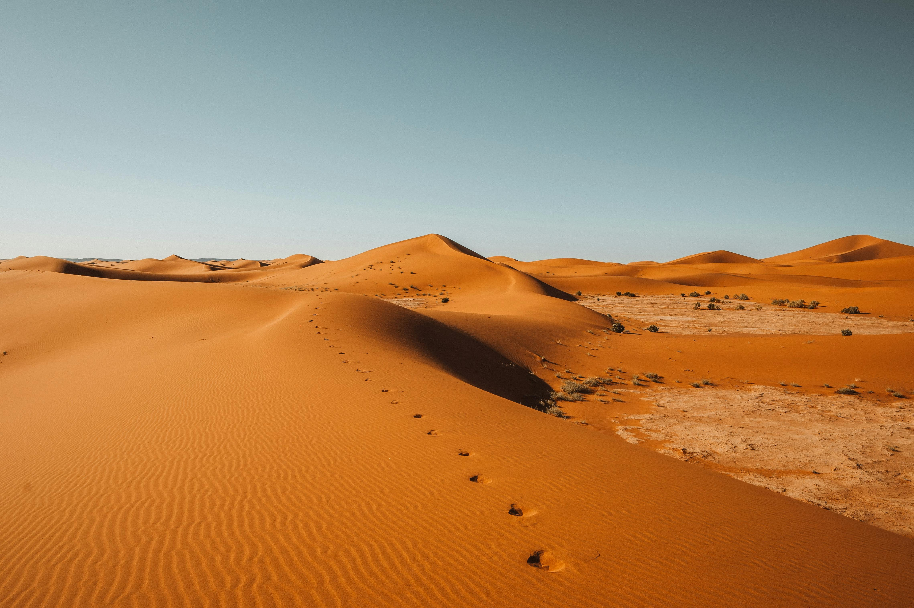
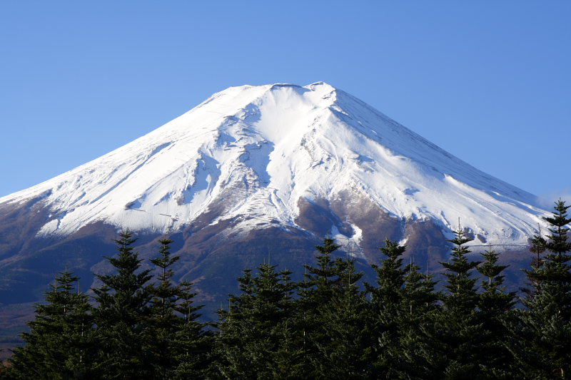
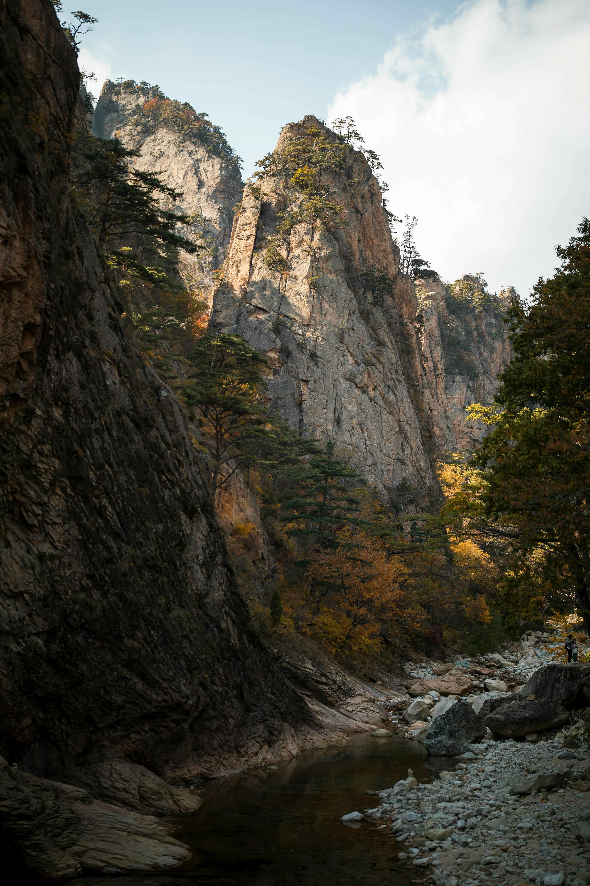
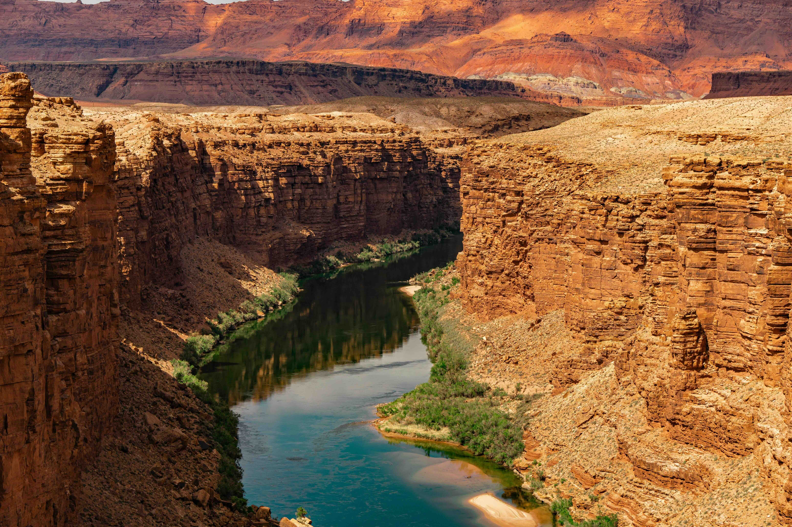
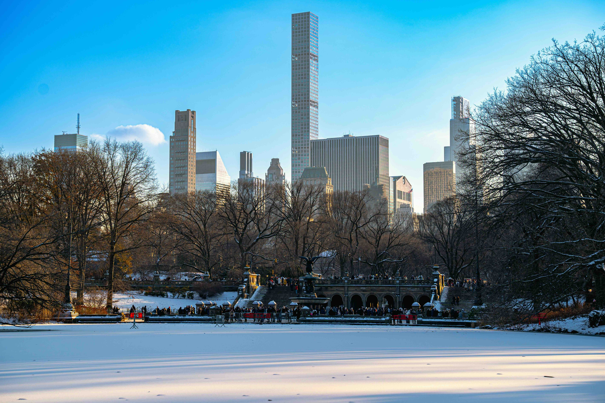
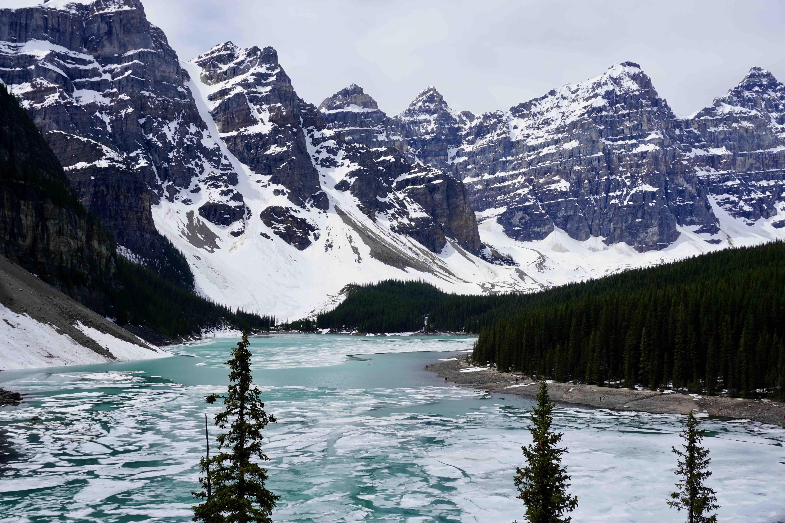
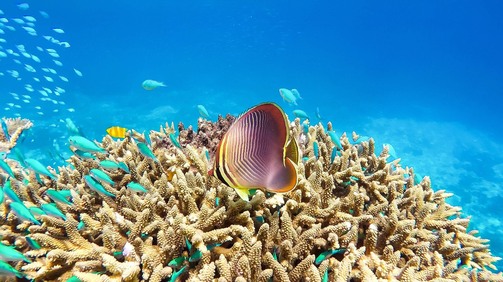

Top Picks
Discover the best destinations around the globe

The Serengeti National Park is a vast wilderness area in Tanzania, known for its incredible biodiversity and the Great Migration of wildebeest and zebra. The park is home to the Big Five—lion, leopard, elephant, buffalo, and rhinoceros—and offers visitors a chance to witness some of the most spectacular wildlife encounters in the world.
🎯 Things to do:
- Go on a safari drive
- Watch the Great Migration
- Spot lions and elephants
- Take a hot air balloon ride
- Photography tours
- Visit Maasai villages

Sahara Desert
📍 Location: North Africa
🌤️ Best Months: November - February
The Sahara Desert is the largest hot desert in the world, known for its vast golden dunes and endless horizons. Winter offers cooler temperatures, making it ideal for exploring. Visitors can ride camels, camp under the stars, and experience traditional desert culture in a unique environment.
🎯 Things to do:
- Ride a camel
- Camp under the stars
- Experience desert culture
- Sandboarding
- Visit Berber camps
- Sunset photography

Victoria Falls
📍 Location: Zambia/Zimbabwe
🌤️ Best Months: June - October
Victoria Falls is one of the largest and most powerful waterfalls in the world. In winter, water levels drop slightly, giving clearer views of the rock formations and the entire waterfall. Visitors can enjoy scenic viewpoints, adventure activities, and stunning rainbows formed by the mist.
🎯 Things to do:
- Walk along the viewpoints
- Helicopter tours
- Bungee jumping
- river rafting
- Sunset cruise
- Photography

Mount Kilimanjaro
📍 Location: Tanzania
🌤️ Best Months: January – March, June – October
Mount Kilimanjaro is the highest peak in Africa and a popular destination for hikers. Spring is an ideal time to climb, with mild weather and fewer crowds. The mountain offers diverse ecosystems and stunning views from its summit.
🎯 Things to do:
- Trekking
- Summit climb
- Photography
- Wildlife spotting
- Camping
- Guided tours

Maldives
📍 Location: Indian Ocean, South Asia
🌤️ Best Months: November – April
The Maldives is a tropical paradise of turquoise waters and overwater villas. Winter offers dry, sunny weather perfect for beach relaxation and water activities. Visitors can explore coral reefs, enjoy luxury resorts, and experience peaceful island life surrounded by stunning ocean views.
🎯 Things to do:
- Snorkeling
- Diving
- Beach relaxing
- Island hopping
- Spa treatments
- Boat tours

Mount Fuji
📍 Location: Japan
🌤️ Best Months: July – September (climbing season)
Mount Fuji is Japan’s most iconic mountain, known for its symmetrical shape. It is a popular destination for climbers and photographers. Visitors can enjoy scenic views, lakes, and cultural significance.
🎯 Things to do:
- Climbing
- Photography
- Sightseeing
- Hiking
- Lake visits
- Sunrise viewing

Bali
📍 Location: Indonesia
🌤️ Best Months: May – September
Bali is a tropical island paradise known for its beautiful beaches, vibrant culture, and lush landscapes. In summer, the island offers warm weather perfect for beach activities and exploring its many temples and rice terraces. Visitors can enjoy water sports, traditional dance performances, and delicious Indonesian cuisine.
🎯 Things to do:
- Surfing
- Temple visits
- Hiking
- Beach relaxing
- Cultural shows
- Waterfalls

Zhangjiajie National Forest Park
📍 Location: China
🌤️ Best Months: September – November
Zhangjiajie is known for its towering sandstone pillars and misty landscapes. Autumn adds colorful foliage, making it even more stunning. Visitors can explore unique natural formations.
🎯 Things to do:
- Hiking
- Cable cars
- Photography
- Scenic walks
- Viewing platforms
- Exploration

Swiss Alps
📍 Location: Switzerland
🌤️ Best Months: December – March
The Swiss Alps are a mountain range in the heart of Europe, known for their stunning landscapes and outdoor activities. In winter, they offer excellent skiing and snowboarding opportunities, while also providing a chance to see the Northern Lights. The region is home to national parks, hot springs, and unique wildlife.
🎯 Things to do:
- Skiing
- Snowboarding
- Train rides
- Hiking
- Photography
- Cable cars

Santorini
📍 Location: Greece
🌤️ Best Months: June – September
Santorini is a volcanic island in the Aegean Sea, known for its stunning sunsets, white-washed buildings, and blue-domed churches. In summer, the island offers warm weather perfect for beach activities and exploring its charming villages. Visitors can enjoy wine tastings, boat tours, and breathtaking views of the caldera.
🎯 Things to do:
- Beach activities
- Wine tastings
- Boat tours
- Exploring villages
- Photography
- Views of the caldera

Paris
📍 Location: France
🌤️ Best Months: June – September
Paris is the capital and largest city of France, known for its rich cultural heritage and beautiful architecture. In summer, the city offers a vibrant atmosphere with its famous museums, delicious cuisine, and romantic ambiance. Visitors can explore the Eiffel Tower, enjoy world-class shopping, and experience the lively nightlife.
🎯 Things to do:
- Sightseeing
- Cafes
- Museums
- Walking tours
- Photography
- Shopping

Dolomites
📍 Location: Italy
🌤️ Best Months: April - June
The Dolomites are a mountain range in northeastern Italy, known for their distinctive limestone peaks and stunning natural beauty. In spring, the region offers a delightful atmosphere with its alpine landscapes, pristine lakes, and vibrant flora. Visitors can explore the famous hiking trails, visit charming mountain villages, and experience the unique charm of this UNESCO World Heritage site.
🎯 Things to do:
- Hiking
- CLimbing
- Photography
- Cycling
- Scenic drives
- Exploring

Grand Canyon
📍 Location: Arizona, USA
🌤️ Best Months: December – March
The Grand Canyon is a massive canyon carved by the Colorado River in Arizona, USA. In winter, the park offers cooler temperatures and fewer crowds, making it an ideal time to explore the stunning landscapes and take in the breathtaking views.
🎯 Things to do:
- Hiking
- Photography
- Scenic views
- Tours
- Camping
- Exploration

New York City
📍 Location: United States
🌤️ Best Months: December – March
New York City is a bustling metropolis known for its iconic landmarks, vibrant culture, and endless entertainment options. In winter, the city comes alive with holiday festivities, ice skating rinks, and festive decorations. Visitors can explore world-class museums, enjoy Broadway shows, and experience the energy of the Big Apple.
🎯 Things to do:
- Ice skating
- Shopping
- Broadway shows
- Sightseeing
- Museums
- Holiday Markets

Banff National Park
📍 Location: Canada
🌤️ Best Months: December – March
Banff National Park transforms into a winter wonderland with snow-covered mountains and frozen lakes. Visitors can enjoy skiing, ice skating, and breathtaking scenery. The peaceful environment and stunning views make it one of the most beautiful winter destinations in the world.
🎯 Things to do:
- Skiing
- Ice skating
- Snowshoeing
- Wildlife spotting
- Photography
- Wildlife spotting

Hawaii
📍 Location: United States
🌤️ Best Months: June – September
Hawaii is a tropical paradise known for its stunning beaches, vibrant culture, and outdoor adventures. In summer, the islands offer warm weather and many activities, making it an ideal time to explore the natural beauty and enjoy water sports.
🎯 Things to do:
- Beach activities
- Hiking
- Snorkeling
- Beach relaxing
- Boat trips
- Volcano Tours

Machu Picchu
📍 Location: Peru
🌤️ Best Months: December – March
Machu Picchu is an ancient Incan citadel located in the Andes Mountains of Peru. In winter, the site offers clear skies and cooler temperatures, making it an ideal time to visit. Visitors can explore the well-preserved stone structures, terraces, and panoramic views.
🎯 Things to do:
- Hiking
- Photography
- Tours
- History exploration
- Scenic views
- Trekking

Amazon Rainforest
📍 Location: Brazil
🌤️ Best Months: November – March
The Amazon Rainforest is the world's largest tropical rainforest, known for its incredible biodiversity and indigenous cultures. In winter, the forest offers cooler temperatures and lower humidity, making it an ideal time for exploration. Visitors can take guided tours, spot wildlife, and learn about the local ecosystems.
🎯 Things to do:
- Wildlife tours
- Boat tours
- Hiking
- Birdwatching
- Photography
- Exploration

Rio de Janeiro
📍 Location: Brazil
🌤️ Best Months: November – March
Rio de Janeiro is a vibrant city known for its stunning beaches, lush mountains, and lively culture. In winter, the city offers pleasant weather and numerous attractions. Visitors can enjoy the famous Christ the Redeemer statue, explore the bustling streets of Copacabana, and experience the rich cultural scene.
🎯 Things to do:
- Beach activities
- Sightseeing
- Hiking
- Festivals
- Photography
- Food tours

Patagonia
📍 Location: Chile & Argentina
🌤️ Best Months: December – March
Patagonia is a remote region with mountains, glaciers, and dramatic landscapes. Winter adds snow, creating stunning scenery. Visitors can explore nature and enjoy peaceful surroundings.
🎯 Things to do:
- Hiking
- Photography
- Glacier tours
- Wildlife spotting
- Scenic views
- Camping

Great Barrier Reef
📍 Location: Australia
🌤️ Best Months: December – March
The Great Barrier Reef is the world's largest coral reef system, stretching over 2,300 kilometers along the coast of Queensland, Australia. It is home to a diverse array of marine life and offers incredible opportunities for snorkeling and diving.
🎯 Things to do:
- Snorkeling
- Diving
- Boat tours
- Marine tours
- Photography
- Relaxing

Sydney
📍 Location: New South Wales, Australia
🌤️ Best Months: December – February
Sydney shines in summer with golden beaches, vibrant harbor views, and iconic landmarks like the Opera House. The city buzzes with outdoor festivals, coastal walks, and surfing culture, making it one of the best destinations in the Southern Hemisphere for sun, sea, and energetic city life.
🎯 Things to do:
- Visit the Sydney Opera House
- Relax at Bondi Beach
- Walk the Bondi to Coogee coastal trail
- Take a harbor cruise
- Explore Darling Harbour
- Watch New Year’s fireworks

Queenstown
📍 Location: New Zealand
🌤️ Best Months: June – August
Queenstown is a top adventure destination surrounded by mountains and lakes. Winter brings snow and excellent skiing conditions. Visitors can enjoy thrilling activities and scenic views.
🎯 Things to do:
- Skiing
- Snowboarding
- Bungee jumping
- Hiking
- Photography
- Scenic tours

Mount Cook
📍 Location: New Zealand
🌤️ Best Months: November – March
Mount Cook is the highest mountain in New Zealand. It offers glaciers, lakes, and stunning alpine scenery. Visitors can enjoy hiking and photography in a peaceful environment.
🎯 Things to do:
- Camping
- Exploration
- Glacier tours
- Hiking
- Photography
- Sightseeing

South Shetland Islands
📍 Location: North of the Antarctic Peninsula
🌤️ Best Months: December – March
The South Shetland Islands are located in the Southern Ocean, just south of the Antarctic Peninsula. They offer a pristine environment ideal for wildlife observation and scientific exploration.
🎯 Things to do:
- Wildlife viewing
- Photography
- Cruises
- Exploration
- Scenic viewing
- Learning

Antarctic Peninsula
📍 Location: Antarctic Peninsula
🌤️ Best Months: November – March
A breathtaking icy wilderness filled with glaciers, penguins, and dramatic landscapes. Summer allows access via expedition cruises for unforgettable wildlife encounters.
🎯 Things to do:
- Wildlife spotting
- Cruises
- Iceberg viewing
- Photography
- Exploration
- Kayaking

Deception Island
📍 Location: South Shetland Islands
🌤️ Best Months: November – March
A unique volcanic island with a flooded caldera, offering dramatic landscapes and rare geothermal activity in Antarctica.
🎯 Things to do:
- Wildlife viewing
- Volcano exploration
- Photography
- Cruises
- Hiking

Paradise Bay
📍 Location: Antarctic Peninsula
🌤️ Best Months: November – March
Paradise Bay is one of Antarctica’s most scenic locations, known for calm waters, towering ice cliffs, and incredible reflections—perfect for peaceful exploration.
🎯 Things to do:
- Kayaking
- Wildlife viewing
- Photography
- Cruises
- Sightseeing
- Exploration